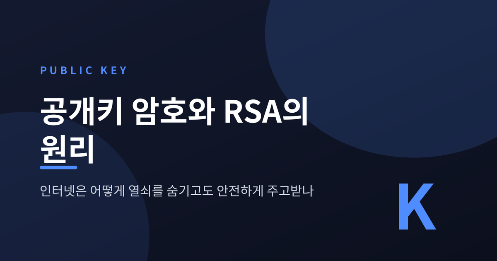
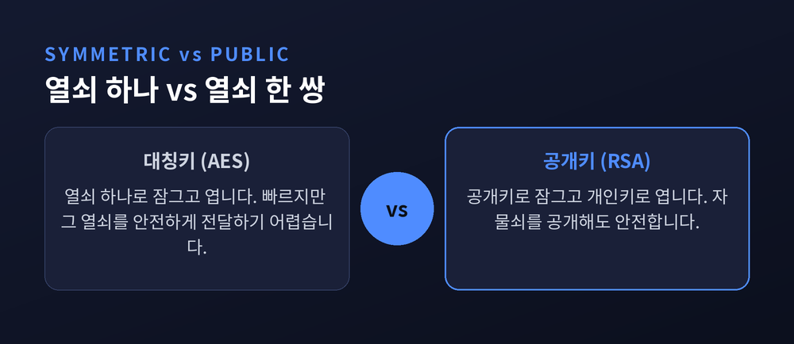
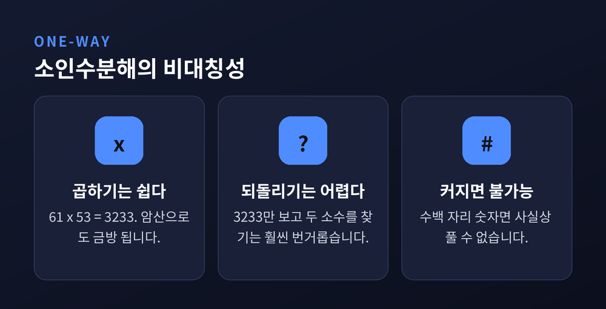
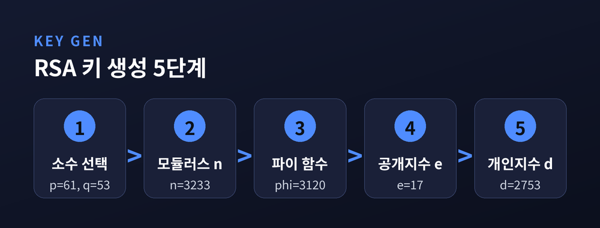
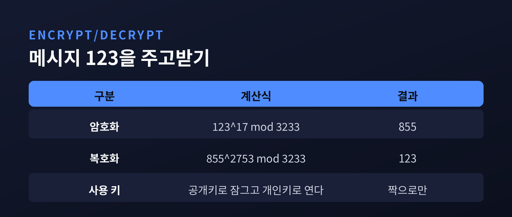
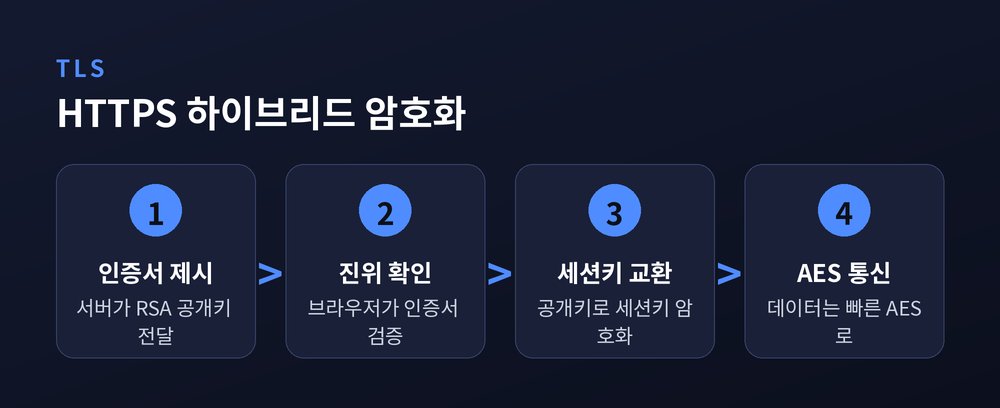

핵심 답변부터 말씀드리면, 인터넷은 "열쇠를 숨겨서 전달"하지 않습니다. 오히려 자물쇠(공개키)를 활짝 공개해 두고, 그 자물쇠를 열 수 있는 열쇠(개인키)는 자기만 갖고 있습니다. 누구나 자물쇠로 잠글 수는 있지만, 여는 건 주인뿐입니다. 이 단순한 발상의 전환이 오늘날 인터넷 보안의 뼈대입니다.
오늘은 공개키 암호, 그중에서도 RSA가 어떻게 동작하는지 교과서 예시로 직접 계산해 가며 정리해 보겠습니다.

암호의 오래된 방식은 열쇠가 하나였습니다.
잠글 때 쓴 열쇠로 열기도 합니다. 이것을 대칭키 암호라 부릅니다. AES가 대표적입니다.
대칭키는 빠릅니다. CPU를 적게 쓰기 때문에 대량의 데이터를 암호화하기에 알맞습니다.
문제는 다른 데 있습니다. 바로 "그 열쇠를 상대에게 어떻게 전달하느냐"입니다.
인터넷에는 도청자가 있습니다. 비밀 열쇠를 그냥 보내면, 보내는 순간 탈취됩니다. 열쇠를 안전하게 보내려면 또 다른 안전한 통로가 필요한데, 그 통로가 있었다면 애초에 암호가 필요 없었을 것입니다. 사용자가 많고 서로 멀리 떨어져 있을수록, 안전한 열쇠 배달은 사실상 불가능에 가깝습니다.
이것을 키 분배 문제라고 합니다. 대칭키 하나로는 넘을 수 없는 벽이었습니다.

공개키 암호는 이 벽을 정면으로 넘습니다.
열쇠를 하나가 아니라 한 쌍으로 만듭니다. 공개키와 개인키입니다.
두 열쇠는 수학적으로 짝을 이루지만, 공개키를 아무리 들여다봐도 개인키를 계산해낼 수는 없습니다.
그래서 공개키는 누구에게나 나눠줘도 됩니다. 개인키만 자기 금고에 숨겨두면 됩니다.
핵심 규칙은 이렇습니다. 공개키로 잠근 것은 오직 짝이 되는 개인키로만 열립니다.
예전에는 열쇠를 몰래 전달하는 데 온 힘을 쏟았습니다. 지금은 자물쇠를 대놓고 공개합니다 — 열쇠만 감추면 되기 때문입니다.
덕분에 안전한 통로 없이도 안전하게 통신할 수 있습니다. 대신 연산이 무겁고 느리다는 대가가 따릅니다. 이 약점을 어떻게 메우는지는 뒤에서 다시 말씀드리겠습니다.
이 아이디어를 실제 수학으로 구현한 대표작이 RSA입니다.
1977년 리베스트, 샤미르, 아델만 세 사람이 만들었고, 이름 첫 글자를 땄습니다.
RSA의 심장은 트랩도어 함수입니다. 한 방향으로는 쉽게 계산되지만, 되돌리기는 어려운 함수입니다. 단, 특별한 비밀 정보(트랩도어)를 아는 사람에게는 되돌리기도 쉬워집니다.
구체적으로는 소인수분해의 비대칭성에 기댑니다.
61과 53을 곱해 3233을 만드는 건 암산으로도 됩니다. 그런데 3233만 보고 "이게 어떤 두 소수의 곱이지?"를 되짚는 건 훨씬 번거롭습니다. 숫자가 수백 자리로 커지면, 사실상 풀 수 없는 문제가 됩니다.
RSA의 안전함은 바로 여기서 나옵니다. 곱하기는 쉽고, 소인수분해는 어렵다는 그 간극입니다.

말로만 들으면 막연하니, 교과서 표준 예시(p=61, q=53)로 직접 계산해 보겠습니다.
1단계 — 두 소수 선택: 서로 다른 소수 p, q를 고릅니다. 여기선 p=61, q=53. 실제 RSA는 수백 자리 소수를 씁니다.
2단계 — 모듈러스 n: n = p × q = 61 × 53 = 3233. 이 n은 공개됩니다.
3단계 — 오일러 파이 함수 φ(n): φ(n) = (p−1)(q−1) = 60 × 52 = 3120.
4단계 — 공개 지수 e: φ(n)과 서로소인 e를 고릅니다. 여기선 e=17. 실무에선 흔히 65537(=216+1)을 씁니다.
5단계 — 개인 지수 d: e·d를 φ(n)으로 나눈 나머지가 1이 되는 d를 구합니다. 계산하면 d=2753입니다. 검산해 보면 17 × 2753 = 46801이고, 이를 3120으로 나누면 나머지가 정확히 1입니다.
정리하면 이렇습니다.
n(3233)은 공개돼 있지만, 여기서 p·q(61·53)를 되찾지 못하면 d를 구할 수 없습니다. 그 되찾기가 바로 소인수분해입니다.

이제 이 열쇠로 실제 메시지를 주고받아 보겠습니다.
암호화는 c = me mod n, 복호화는 m = cd mod n입니다. 어렵게 보이지만, 작은 예로 따라가면 명확합니다.
메시지 m=123을 보낸다고 하겠습니다.
암호화: 12317을 3233으로 나눈 나머지 = 855. 상대에게 855를 보냅니다.
복호화: 받은 855를 개인키로 처리합니다. 8552753을 3233으로 나눈 나머지 = 123. 원래 메시지가 정확히 돌아왔습니다.
왜 되돌아올까요. e와 d를 "곱한 뒤 φ(n)으로 나눈 나머지가 1"이 되도록 설계했기 때문입니다. 오일러 정리에 의해 (me)d는 다시 m이 됩니다.
계산 자체는 제곱-곱셈 방식으로 큰 수도 빠르게 처리합니다. 반대로 개인키 d 없이 855만 보고 123을 알아내는 일은, 결국 소인수분해만큼 어렵습니다. 그것이 이 방의 잠금장치입니다.

RSA는 반대로도 씁니다. 개인키로 처리하고 공개키로 확인하면, 디지털 서명이 됩니다.
개인키는 본인만 가지므로, 서명은 위조할 수 없는 전자 도장이 됩니다. 받는 쪽은 공개키로 두 가지를 확인합니다. 보낸 사람이 진짜 맞는지(인증), 그리고 도중에 내용이 바뀌지 않았는지(무결성)입니다.
우리가 매일 쓰는 HTTPS가 이 원리 위에 서 있습니다.
브라우저가 사이트에 접속하면, 서버는 RSA 공개키가 담긴 인증서를 내밉니다. 브라우저는 인증서의 진위를 확인하고, 공개키로 세션키의 씨앗을 암호화해 보냅니다. 이렇게 양쪽만 아는 세션키가 만들어집니다.
여기서 앞서 말한 "RSA는 느리다"는 약점을 해결합니다. RSA로는 오직 세션키만 안전하게 주고받고, 실제 대용량 데이터는 빠른 AES로 암호화합니다. 이 하이브리드 방식이 인증·키교환의 강점과 속도를 동시에 취합니다.
현재 표준은 RSA-2048입니다. 알려진 모든 고전적 공격에 안전하며, NIST 기준으로 2030년까지 적정한 보안을 제공합니다. 일반 컴퓨터로 2048비트를 깨려면 약 6천조 년이 걸린다는 추정도 있습니다.

다만 완벽하지는 않습니다. RSA의 안전함은 "소인수분해가 어렵다"는 전제 위에 있는데, 이 전제를 겨눈 존재가 있습니다.
1994년 피터 쇼어가 제안한 쇼어 알고리즘입니다.
양자컴퓨터에서 돌아가는 이 알고리즘은, 소인수분해를 다항시간 안에 풀어냅니다. 고전 컴퓨터가 천문학적 시간을 쓰던 문제를 양자컴퓨터는 원리적으로 몇 시간 만에 끝낼 수 있습니다. 한 추정 연구는 2048비트 RSA를 깨는 데 약 4,098개의 논리 큐빗과 28시간 남짓이면 된다고 봅니다.
물론 현실의 간극은 큽니다. 2025년 현재의 양자 하드웨어는 이 수준과 아직 한참 멉니다. 실제로 2048비트 RSA를 깬 사례는 없습니다. 과대광고와 현실 사이의 거리는 넉넉합니다.
그럼에도 대비는 시작됐습니다. 양자 공격에 견디는 포스트 양자 암호(PQC)를 NIST가 표준화하며 전환을 준비하고 있습니다. 지금 암호문을 모아뒀다가 훗날 양자컴퓨터로 푼다는 "지금 수집, 나중에 복호화" 전략 때문에, 전환은 미래가 아니라 현재의 과제입니다.
정리하면 이렇습니다.
공개키 암호는 열쇠를 숨기는 대신 자물쇠를 공개하는 발상으로, 인터넷의 신뢰를 지탱해 왔습니다. RSA는 곱셈과 소인수분해 사이의 간극이라는 얇은 수학 위에 그 신뢰를 세웠습니다.
"열쇠를 숨기지 않고도 안전한 비결은, 잠그는 힘과 여는 힘을 갈라놓은 데 있습니다."
그 간극이 양자컴퓨터 앞에서 얼마나 버텨줄지 물으신다면, 아직은 시간이 있으나 준비는 이미 시작됐다고 답하겠습니다.